Introduction: full explained deconverse pipeline with PBMCs
Clarice S. Groeneveld
intro_pbmc.RmdContext
We’ll demonstrate the functionality of deconverse using
a PBMC dataset. This is a small single-cell reference with a limited
number of cells per cell type particularly for the lower levels of cell
type hierarchy.
deconverse implements multiple bulk deconvolution
methods based on single-cell references, and enhances them by adding
hierarchy-awareness. It does so by deconvoluting at the different levels
of the cell type hierarchy and using results from the higher level of
hierarchy to correct the lower level estimated fractions.
In this example, that comes provided with the Seurat
package, peripheral blood mononuclear cells (PBMCs) are annotated at 2
levels of hierarchy. Bulk RNA-seq data can be deconvoluted at both
levels.
Usually, we would recommend building the single-cell reference on one
dataset and benchmarking on a different one. However, for this example,
we will split cells into training (reference) and test (benchmarking)
set. Benchmarking is not a necessary step of deconverse,
but a feature that can be used to compare the different implemented
methods in your data type and decide what levels of annotation are
trustworthy.
Load PBMC dataset
First, we load the dataset from Seurat and look at the provided data and its two levels of annotation.
pbmc <- pp_PBMCs()
#> Warning: Feature names cannot have underscores ('_'), replacing with dashes
#> ('-')
#> Normalizing layer: counts
#> Centering and scaling data matrix
#> Finding variable features for layer counts
#> PC_ 1
#> Positive: CST3, TYROBP, LST1, AIF1, FTL, FTH1, LYZ, FCN1, S100A9, TYMP
#> FCER1G, CFD, LGALS1, S100A8, CTSS, LGALS2, SERPINA1, IFITM3, SPI1, CFP
#> PSAP, IFI30, SAT1, COTL1, S100A11, NPC2, GRN, LGALS3, GSTP1, PYCARD
#> Negative: MALAT1, LTB, IL32, IL7R, CD2, B2M, ACAP1, CD27, STK17A, CTSW
#> CD247, GIMAP5, AQP3, CCL5, SELL, TRAF3IP3, GZMA, MAL, CST7, ITM2A
#> MYC, GIMAP7, HOPX, BEX2, LDLRAP1, GZMK, ETS1, ZAP70, TNFAIP8, RIC3
#> PC_ 2
#> Positive: CD79A, MS4A1, TCL1A, HLA-DQA1, HLA-DQB1, HLA-DRA, LINC00926, CD79B, HLA-DRB1, CD74
#> HLA-DMA, HLA-DPB1, HLA-DQA2, CD37, HLA-DRB5, HLA-DMB, HLA-DPA1, FCRLA, HVCN1, LTB
#> BLNK, P2RX5, IGLL5, IRF8, SWAP70, ARHGAP24, FCGR2B, SMIM14, PPP1R14A, C16orf74
#> Negative: NKG7, PRF1, CST7, GZMB, GZMA, FGFBP2, CTSW, GNLY, B2M, SPON2
#> CCL4, GZMH, FCGR3A, CCL5, CD247, XCL2, CLIC3, AKR1C3, SRGN, HOPX
#> TTC38, APMAP, CTSC, S100A4, IGFBP7, ANXA1, ID2, IL32, XCL1, RHOC
#> PC_ 3
#> Positive: HLA-DQA1, CD79A, CD79B, HLA-DQB1, HLA-DPB1, HLA-DPA1, CD74, MS4A1, HLA-DRB1, HLA-DRA
#> HLA-DRB5, HLA-DQA2, TCL1A, LINC00926, HLA-DMB, HLA-DMA, CD37, HVCN1, FCRLA, IRF8
#> PLAC8, BLNK, MALAT1, SMIM14, PLD4, P2RX5, IGLL5, LAT2, SWAP70, FCGR2B
#> Negative: PPBP, PF4, SDPR, SPARC, GNG11, NRGN, GP9, RGS18, TUBB1, CLU
#> HIST1H2AC, AP001189.4, ITGA2B, CD9, TMEM40, PTCRA, CA2, ACRBP, MMD, TREML1
#> NGFRAP1, F13A1, SEPT5, RUFY1, TSC22D1, MPP1, CMTM5, RP11-367G6.3, MYL9, GP1BA
#> PC_ 4
#> Positive: HLA-DQA1, CD79B, CD79A, MS4A1, HLA-DQB1, CD74, HIST1H2AC, HLA-DPB1, PF4, SDPR
#> TCL1A, HLA-DRB1, HLA-DPA1, HLA-DQA2, PPBP, HLA-DRA, LINC00926, GNG11, SPARC, HLA-DRB5
#> GP9, AP001189.4, CA2, PTCRA, CD9, NRGN, RGS18, CLU, TUBB1, GZMB
#> Negative: VIM, IL7R, S100A6, IL32, S100A8, S100A4, GIMAP7, S100A10, S100A9, MAL
#> AQP3, CD2, CD14, FYB, LGALS2, GIMAP4, ANXA1, CD27, FCN1, RBP7
#> LYZ, S100A11, GIMAP5, MS4A6A, S100A12, FOLR3, TRABD2A, AIF1, IL8, IFI6
#> PC_ 5
#> Positive: GZMB, NKG7, S100A8, FGFBP2, GNLY, CCL4, CST7, PRF1, GZMA, SPON2
#> GZMH, S100A9, LGALS2, CCL3, CTSW, XCL2, CD14, CLIC3, S100A12, RBP7
#> CCL5, MS4A6A, GSTP1, FOLR3, IGFBP7, TYROBP, TTC38, AKR1C3, XCL1, HOPX
#> Negative: LTB, IL7R, CKB, VIM, MS4A7, AQP3, CYTIP, RP11-290F20.3, SIGLEC10, HMOX1
#> LILRB2, PTGES3, MAL, CD27, HN1, CD2, GDI2, CORO1B, ANXA5, TUBA1B
#> FAM110A, ATP1A1, TRADD, PPA1, CCDC109B, ABRACL, CTD-2006K23.1, WARS, VMO1, FYB
#> Computing nearest neighbor graph
#> Computing SNN
#> Modularity Optimizer version 1.3.0 by Ludo Waltman and Nees Jan van Eck
#>
#> Number of nodes: 2638
#> Number of edges: 95927
#>
#> Running Louvain algorithm...
#> Maximum modularity in 10 random starts: 0.8728
#> Number of communities: 9
#> Elapsed time: 0 seconds
#> Warning: The default method for RunUMAP has changed from calling Python UMAP via reticulate to the R-native UWOT using the cosine metric
#> To use Python UMAP via reticulate, set umap.method to 'umap-learn' and metric to 'correlation'
#> This message will be shown once per session
#> 16:31:53 UMAP embedding parameters a = 0.9922 b = 1.112
#> 16:31:53 Read 2638 rows and found 10 numeric columns
#> 16:31:53 Using Annoy for neighbor search, n_neighbors = 30
#> 16:31:53 Building Annoy index with metric = cosine, n_trees = 50
#> 0% 10 20 30 40 50 60 70 80 90 100%
#> [----|----|----|----|----|----|----|----|----|----|
#> **************************************************|
#> 16:31:54 Writing NN index file to temp file /tmp/RtmpcGiqnj/file376554835a69c
#> 16:31:54 Searching Annoy index using 1 thread, search_k = 3000
#> 16:31:54 Annoy recall = 100%
#> 16:31:55 Commencing smooth kNN distance calibration using 1 thread with target n_neighbors = 30
#> 16:31:55 Initializing from normalized Laplacian + noise (using RSpectra)
#> 16:31:55 Commencing optimization for 500 epochs, with 105140 positive edges
#> 16:31:58 Optimization finished
#> Calculating cluster 0
#> Calculating cluster 1
#> Calculating cluster 2
#> Calculating cluster 3
#> Calculating cluster 4
#> Calculating cluster 5
#> Calculating cluster 6
#> Calculating cluster 7
#> Calculating cluster 8
((DimPlot(pbmc, reduction = "umap", group.by = "Cell_major_identities", label = TRUE, label.size = 2.5) + NoLegend()) | (DimPlot(pbmc, group.by = "Cell_minor_identities", reduction = "umap", label = TRUE, label.size = 2.5) + NoLegend())) &
theme(axis.title = element_text(size = 8),
axis.text = element_text(size = 8),
plot.title = element_text(size = 9))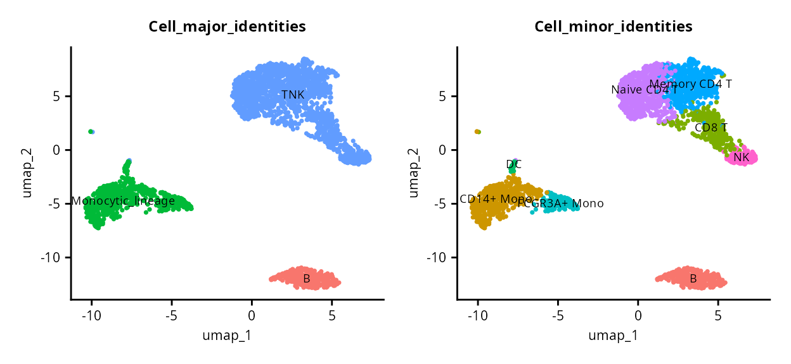
PBMCs are annotated at two levels, encoded in the variables
Cell_major_identities and
Cell_minor_identities in the object metadata. The UMAP
divides the cells into three major clusters, corresponding to the
Cell_major_identities which we will refer to as the first
level of annotation or l1. This is broken down into
finer-grained annotation in the second level of annotation or
l2.
Split train/test
To run both the reference and the benchmarking from this data, we need to split the cells randomly into training (60%) and test (40%) sets.
set.seed(0)
ncells <- dim(pbmc)[2]
train_ids <- sample(1:ncells, ncells*0.6)
test_ids <- setdiff(1:ncells, train_ids)
pbmc_train <- pbmc[,train_ids]
pbmc_test <- pbmc[,test_ids]
((DimPlot(pbmc_train, reduction = "umap", group.by = "Cell_major_identities", label = TRUE) + NoLegend()) | (DimPlot(pbmc_test, reduction = "umap", group.by = "Cell_major_identities", label = TRUE) + NoLegend())) &
theme(axis.title = element_text(size = 8),
axis.text = element_text(size = 8),
plot.title = element_text(size = 9))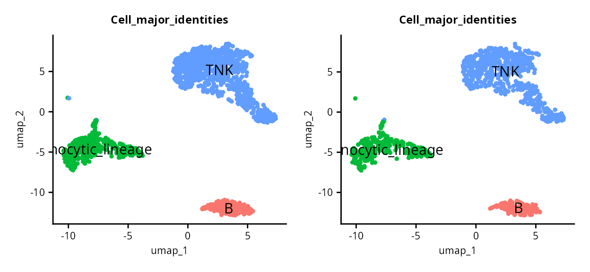
screference: Build single-cell reference from train
data
Now, we’re ready to build the reference as an
hscreference object. We use
deconverse::new_screference and give our Seurat object
pbmc_train, the l1 and l2 annotation variables in order, a
project name, and a batch_id variable which could correspond to patient
in another context, but here is just the same value for all cells.
pbmc_ref <- new_screference(pbmc_train,
annot_id = c("Cell_major_identities", "Cell_minor_identities"),
project_name = "pbmc_example",
batch_id = "orig.ident")
#> Generating new `hscreference` object...
pbmc_ref
#> h-screference object named `pbmc_example` with 2 levels of annotation from 1575 cells
#> population annotation tree:
#> levelName
#> 1 populations
#> 2 ¦--B
#> 3 ¦ °--B
#> 4 ¦--Monocytic_lineage
#> 5 ¦ ¦--CD14+ Mono
#> 6 ¦ ¦--DC
#> 7 ¦ °--FCGR3A+ Mono
#> 8 °--TNK
#> 9 ¦--CD8 T
#> 10 ¦--Memory CD4 T
#> 11 ¦--Naive CD4 T
#> 12 °--NK
#> cached results:
#> l1:
#> l2:Once the object is created, it can be used to compute a reference for
different methods. We’ll compute references for DWLS (which is also used
for OLS and SVR), svr and AutoGeneS. For all available deconvolution
methods, use deconvolution_methods().
Compute references
And then compute the references (they will be grabbed from the cache if present):
# Optional: parallelize with Seurat
library(future)
options(future.globals.maxSize= 4000*1024^2)
plan("multicore", workers = 8)
#> Warning in supportsMulticoreAndRStudio(...): [ONE-TIME WARNING] Forked
#> processing ('multicore') is not supported when running R from RStudio because
#> it is considered unstable. For more details, how to control forked processing
#> or not, and how to silence this warning in future R sessions, see
#> ?parallelly::supportsMulticore
# Compute references
pbmc_ref <- pbmc_ref |>
compute_reference("dwls") |>
compute_reference("autogenes")
#> Results found in cache, returning...
#> Results found in cache, returning...
#> Results found in cache, returning...
#> Results found in cache, returning...Now the single-cell reference is ready for deconvolution! First, let’s benchmark it with our test set.
Apply to real PBMC bulk RNA-seq
To demonstrate the real-life usability of deconverse, we will use an example dataset of bulk PBMCs.
Download data
First, we download the data and keep only the PBMC bulk samples.
library(GEOquery)
#> Loading required package: Biobase
#> Loading required package: BiocGenerics
#>
#> Attaching package: 'BiocGenerics'
#> The following objects are masked from 'package:lubridate':
#>
#> intersect, setdiff, union
#> The following objects are masked from 'package:dplyr':
#>
#> combine, intersect, setdiff, union
#> The following object is masked from 'package:SeuratObject':
#>
#> intersect
#> The following objects are masked from 'package:stats':
#>
#> IQR, mad, sd, var, xtabs
#> The following objects are masked from 'package:base':
#>
#> anyDuplicated, aperm, append, as.data.frame, basename, cbind,
#> colnames, dirname, do.call, duplicated, eval, evalq, Filter, Find,
#> get, grep, grepl, intersect, is.unsorted, lapply, Map, mapply,
#> match, mget, order, paste, pmax, pmax.int, pmin, pmin.int,
#> Position, rank, rbind, Reduce, rownames, sapply, setdiff, table,
#> tapply, union, unique, unsplit, which.max, which.min
#> Welcome to Bioconductor
#>
#> Vignettes contain introductory material; view with
#> 'browseVignettes()'. To cite Bioconductor, see
#> 'citation("Biobase")', and for packages 'citation("pkgname")'.
#> Setting options('download.file.method.GEOquery'='auto')
#> Setting options('GEOquery.inmemory.gpl'=FALSE)
# Get dataset
gset <- getGEO("GSE107011")[[1]]
#> Found 1 file(s)
#> GSE107011_series_matrix.txt.gz
# Get sample annotation
samp_annot <- pData(gset) %>%
tibble() %>%
dplyr::filter(source_name_ch1 == "PBMCs") %>%
mutate(sample_name = str_remove(title, "_rep.*$"),
sample_name = ifelse(str_detect(sample_name, "^\\d"), paste0("X", sample_name), sample_name))
# Download gene expression matrix
curl::curl_download("https://ftp.ncbi.nlm.nih.gov/geo/series/GSE107nnn/GSE107011/suppl/GSE107011_Processed_data_TPM.txt.gz", "GSE107011_TPM.txt.gz")
gexp <- read.table("GSE107011_TPM.txt.gz")
gexp <- gexp[,samp_annot$sample_name]
# Remove gene ID version
rownames(gexp) <- str_remove(rownames(gexp), "\\.[0-9]+$")
file.remove("GSE107011_TPM.txt.gz")
#> [1] TRUEGet gene annotation
As gene annotation was not provided, we download and add annotation used to pre-process the data according to their documentation to get gene symbols. Ideally, annotation should be from the same version of Ensembl, but to simplify, we’ll use the ‘latest’.
library(biomaRt)
library(needs)
needs::prioritize("dplyr")
ensembl <- useEnsembl(biomart = "genes",
dataset = "hsapiens_gene_ensembl")
gene_annot <- getBM(attributes = c("ensembl_gene_id", "hgnc_symbol"),
filters = "ensembl_gene_id",
values = rownames(gexp),
ensembl)
gene_annot <- gene_annot %>%
as_tibble() %>%
group_by(hgnc_symbol) %>%
slice(1) %>%
filter(hgnc_symbol != "", !is.na(hgnc_symbol))
# Use gene symbols (like in reference)
gexp <- gexp[gene_annot$ensembl_gene_id,]
rownames(gexp) <- gene_annot$hgnc_symbol
gexp <- as.matrix(gexp)
dim(gexp)
#> [1] 40682 13Run deconverse
Now we can run deconverse on the bulk PBMC dataset with
symbol identifiers from the reference we previously calculated.
Note: the pbmc_bench is not
necessary for any of these steps, it only serves to benchmark
the different methods.
deconv_res <- deconvolute_all(gexp, pbmc_ref, methods = c("dwls", "ols", "svr"))Compare results
Now we cal compare the results at the two levels of hierarchy.
l1_results <- lapply(deconv_res, "[[", "l1") %>% bind_rows()
l2_results <- lapply(deconv_res, "[[", "l2") %>% bind_rows()
frac_names <- colnames(l1_results) %>% str_subset("^frac")
all_frac_mat <- lapply(frac_names, function(frac) {
cell_type <- str_remove(frac, "^frac_")
l1_results %>%
pivot_wider(id_cols = "sample", names_from = "method", values_from = frac) %>%
mutate(sample = paste0(sample, "_", cell_type)) %>%
as.data.frame()
}) %>%
bind_rows() %>%
column_to_rownames("sample")
# install.packages("ggcorrplot")
ggcorrplot::ggcorrplot(cor(all_frac_mat), hc.order = TRUE)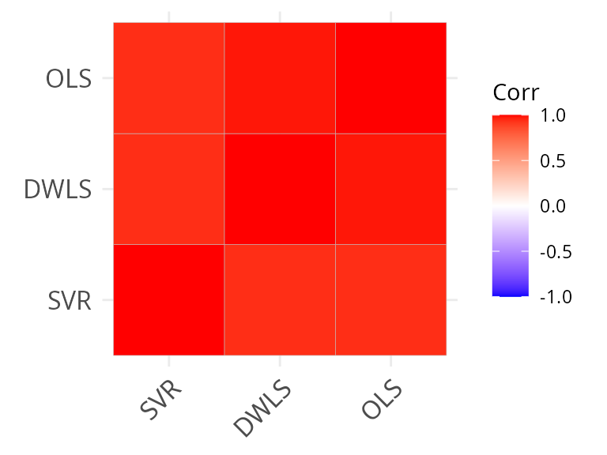
frac_names <- colnames(l2_results) %>% str_subset("^frac")
all_frac_mat_l2 <- lapply(frac_names, function(frac) {
cell_type <- str_remove(frac, "^frac_")
l2_results %>%
pivot_wider(id_cols = "sample", names_from = "method", values_from = frac) %>%
mutate(sample = paste0(sample, "_", cell_type)) %>%
as.data.frame()
}) %>%
bind_rows() %>%
column_to_rownames("sample")
ggcorrplot::ggcorrplot(cor(all_frac_mat_l2, use = "pair"), hc.order = TRUE)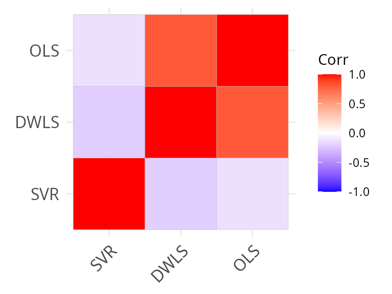
We see that there is a much higher correlation between methods at the coarse-level of annotation, as expected.
Check sample deconvolution by a method
We can verify the results of deconvolution by plotting the proportions:
pivot_dwls_l1 <- l1_results %>%
filter(method == "DWLS") %>%
pivot_longer(cols = starts_with("frac"), names_to = "pop", values_to = "frac") %>%
mutate(pop = str_remove(pop, "frac_") %>% factor(levels = c("B", "Monocytic_lineage", "TNK")),
level = "l1")
pivot_dwls_l2 <- l2_results %>%
filter(method == "DWLS") %>%
pivot_longer(cols = starts_with("frac"), names_to = "pop", values_to = "frac") %>%
mutate(pop = str_remove(pop, "frac_") %>% factor(levels = c("B", "CD14+ Mono", "DC",
"FCGR3A+ Mono", "CD8 T",
"Memory CD4 T", "Naive CD4 T",
"NK")),
level = "l2")
pop_order <- pivot_dwls_l1 %>% filter(pop == "TNK") %>% arrange(frac) %>% pull(sample)
l1_plt <- pivot_dwls_l1 %>%
mutate(sample = factor(sample, levels = pop_order)) %>%
ggplot(aes(sample, frac, fill = pop)) +
geom_col(color = "black", size = 0.2) +
geom_hline(yintercept = c(0.25, 0.5, 0.75), lty = "dashed") +
ggheatmapper::theme_scatter() +
labs(title = "l1", y = "fraction", fill = "population") +
theme(axis.text.x = element_blank(),
axis.title.x = element_blank(),
axis.ticks.x = element_blank())
#> Warning: Using `size` aesthetic for lines was deprecated in ggplot2 3.4.0.
#> ℹ Please use `linewidth` instead.
#> This warning is displayed once every 8 hours.
#> Call `lifecycle::last_lifecycle_warnings()` to see where this warning was
#> generated.
l2_plt <- pivot_dwls_l2 %>%
mutate(sample = factor(sample, levels = pop_order)) %>%
ggplot(aes(sample, frac, fill = pop)) +
geom_col(color = "black", size = 0.2) +
geom_hline(yintercept = c(0.25, 0.5, 0.75), lty = "dashed") +
ggheatmapper::theme_scatter() +
labs(title = "l2", y = "fraction", fill = "population") +
theme(axis.text.x = element_text(angle = 45, hjust = 1, vjust = 1))
l1_plt / l2_plt
scbench: Run benchmarking of methods on user provided
data
Bounds
Now, let’s build our benchmarking set. First, we need to understand how the annotations relate to each other to build the “bounds” of our pseudobulk simulations (don’t worry, this will be further explained).
table(pbmc_test$Cell_major_identities, pbmc_test$Cell_minor_identities)
#>
#> B CD14+ Mono CD8 T DC FCGR3A+ Mono Memory CD4 T
#> B 134 0 0 0 0 0
#> Monocytic_lineage 0 198 0 9 71 0
#> TNK 0 0 121 0 0 180
#>
#> Naive CD4 T NK
#> B 0 0
#> Monocytic_lineage 0 0
#> TNK 277 60We can see that l1 B cells only correspond to
l2 B cells; l1 Monocytic_lineage becomes
l2 CD14+ Mono, FCGR3A+ Mono and
DC; and l1 TNK splits into
l2 CD8 T, Memory CD4 T,
Naive CD4 T and NK.
In PBMCs, lymphocytes make up about 70-90% of cells and monocytes make up 10-20%. If we want to make pseudobulk mixtures that resemble real PBMCs, we should include in them more lymphocytes, particularly more abundant T cells, than monocytes. This is what bounds are for.
Bounds are used to create random mixtures with controlled
proportions. For each population, we need a lower and upper bound. We’ll
start with l1 populations:
l1_bounds <- data.frame(
population = c("B", "Monocytic_lineage", "TNK"),
lower = c(0.05, 0.1, 0.5),
upper = c(0.2, 0.3, 0.85)
)We’ve set that B cells will make up between 10-20% of mixtures,
Monocytic lineage between 10-30% and TNK 50-85%. The structure of bounds
should always be a data.frame with 3 columns (population,
lower, upper) where lower/upper refers to lower and upper bounds. Make
sure the population names are the same as the levels in the annotation
table.
unique(pbmc_test$Cell_major_identities)
#> [1] "B" "Monocytic_lineage" "TNK"Bounds at finer levels of l2 are always given within the context of
their coarser grained annotation. For example,
Monocytic lineage will be split into 3 populations. As
dendritic cells are more rare than monocytes, we can make them more rare
in our mixtures as well:
l2_mono_bounds <- data.frame(
population = c("CD14+ Mono", "FCGR3A+ Mono", "DC"),
lower = c(0.3, 0.2, 0),
upper = c(0.8, 0.6, 0.2)
)Following the same logic, we can do the bounds for the
sub-populations of TNK. It’s not necessary for
B, since they are not split into sub-populations in this
annotation.
l2_tnk_bounds <- data.frame(
population = c("CD8 T", "Memory CD4 T", "Naive CD4 T", "NK"),
lower = c(0.2, 0.2, 0.2, 0.1),
upper = c(0.5, 0.5, 0.5, 0.3)
)All bounds should be put together into a list, and names should be l1
for the coarsest-grained population and
{level}_{coarse_population_that_was_split} for finer levels
(e.g. l2_Monocytic_lineage ).
pbmc_bounds <- list(
l1 = l1_bounds,
l2_TNK = l2_tnk_bounds,
l2_Monocytic_lineage = l2_mono_bounds
)Note that if not provided, scbench will consider all
bounds as 0-1.
Create the scbench
Now we have the information we need to create our benchmarking set.
Variables are very similar to creating an screference, with
the exception of pop_bounds, which we have explained
above.
pbmc_bench <- new_scbench(pbmc_test,
annot_ids = c("Cell_major_identities",
"Cell_minor_identities"),
# pop_bounds = pbmc_bounds,
project_name = "pbmc_example",
batch_id = "orig.ident")
#> Generating new `scbench` object...
#> Joining with `by = join_by(l1)`
pbmc_bench
#> scbench object named pbmc_example with 11 reference populations and 2 levels of annotation
#> Bounds [x] | Mixtures [ ] | Spillover [ ] | Limit of Detection [ ] | Pseudobulks [ ]There are 3 main benchmarks tested by scbench:
population
limit of detection (lod)
spillover
The population benchmark, pseudobulk mixtures are created using the random proportions constrained by the bounds. These known proportions will be then compared with the fractions estimated by the deconvolution methods to assess their accuracy.
The limit of detection benchmark estimates how low the fraction of a particular population has to be for a method to be able to detect it.
In the spillover benchmark, cells for different pairs of populations on the same level are mixed with increasing proportions to evaluate whether the methods can distinguish them well from each other.
The first step is to generate the mixtures for the 3 different methods:
pbmc_bench <- pbmc_bench |>
mixtures_population(nsamp = 500) |>
mixtures_lod() |>
mixtures_spillover()
#> Simulating spillover mixtures between population pairs...
#> Simulating limits of detection for each population...
#> Simulating population mixtures given bounds...Then, we can generate pseudobulks for these mixtures by mixing 100 random cells that correspond to the proportions given by the mixtures. Finally, we can call the different methods to deconvolute.
As for the screference, the next steps will go a lot faster by using cached results.
Here, we’re demonstrating with 5 methods currently implemented. For a
full list, see deconvolution_methods().
pbmc_bench <- pseudobulks(pbmc_bench, ncells = 1000)
#> Pseudobulks for population found in cache. Skipping...
#> Pseudobulks for lod found in cache. Skipping...
#> Pseudobulks for lod found in cache. Skipping...
#> Pseudobulks for spillover found in cache. Skipping...
#> Pseudobulks for spillover found in cache. Skipping...
pbmc_bench <- deconvolute_all(pbmc_bench, pbmc_ref,
methods = c("dwls", "svr", "ols", "autogenes", "bisque"))Benchmarking results
deconverse implements many functions to produce many benchmarking plots, either for a single method or summarizing and comparing multiple methods.
Evaluation of a single method
Here, we generate all evaluation plots for results coming from the
dampened weighted least squares (dwls).
plt_cors_scatter plots the correlations between
deconvoluted pseudobulk portions found by the method and the true
fractions.
plt_cors_scatter(pbmc_bench, method = "dwls")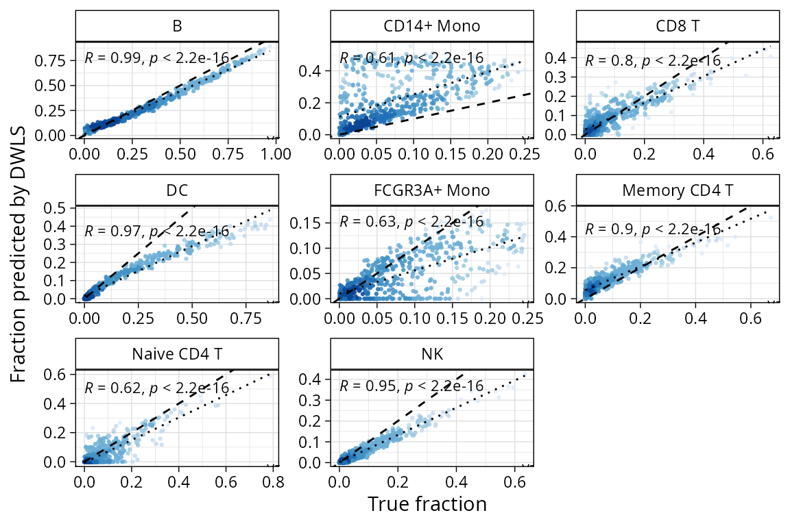
plt_lod_scatter plots correlations between pseudobulk
mixtures with increasing proportion of one population and where the
limit of detection was established for that method.
plt_lod_scatter(pbmc_bench, method = "dwls")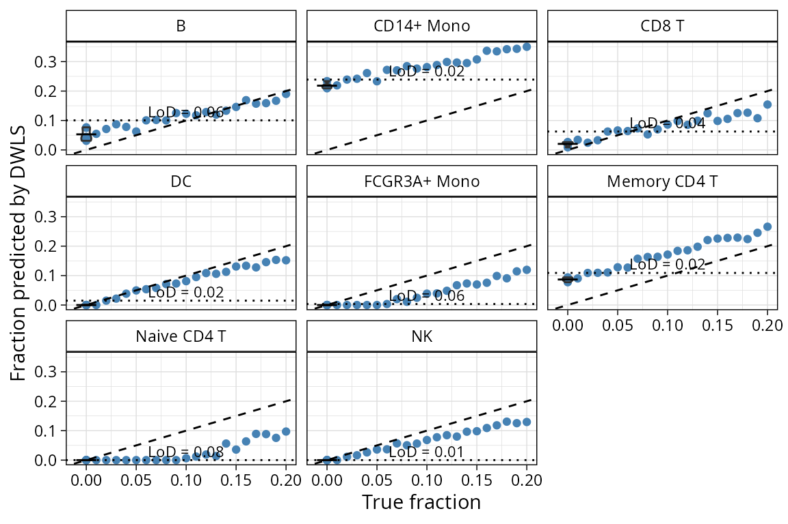
plt_spillover_scatter plots the spillover between each
pair of populations to help identify pairs of populations that will
possibly be confused by the two methods.
plt_spillover_scatter(pbmc_bench, method = "dwls")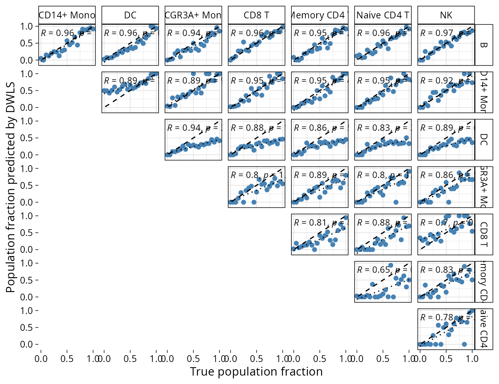
By default, plots will show the benchmark on finest grained annotation available. We can verify on coarser grained by specifying the level:
plt_cors_scatter(pbmc_bench, method = "dwls", level = "l1")Comparison of methods
There are also plots available to compare performance on the same data from different methods. The two main heatmaps compare correlation between pseudobulk mixture proportions and deconvoluted fractions by population, or the root mean squared error (RMSE) from predicted fraction and real fraction.
Population
plt_cor_heatmap(pbmc_bench, level = "l2")$heatmap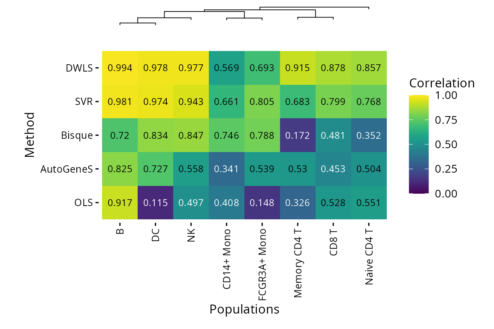
plt_rmse_heatmap(pbmc_bench, level = "l2")$heatmap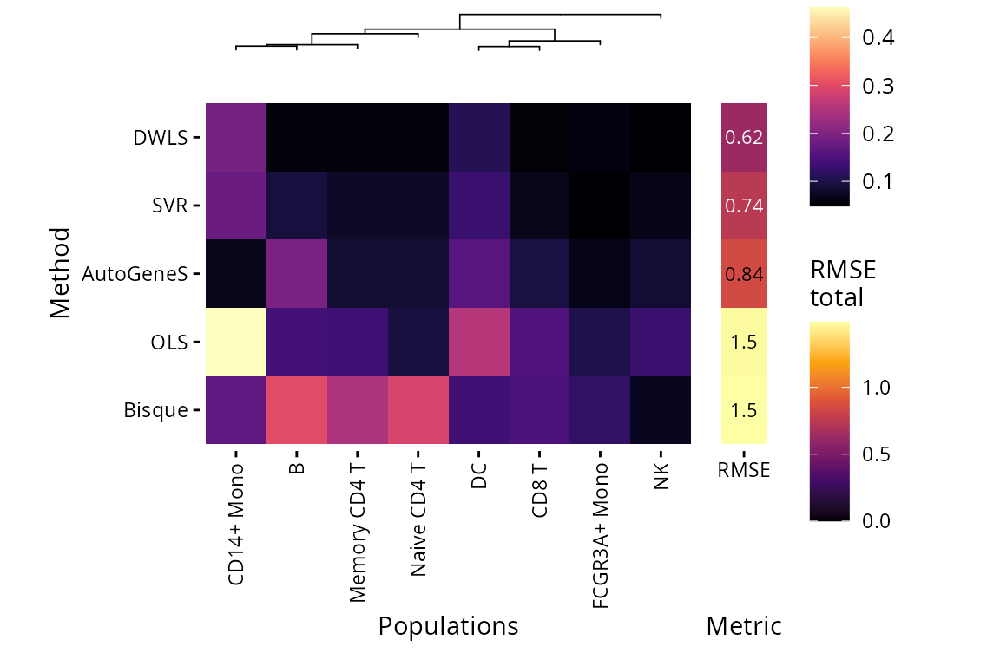
LoD and Spillover
Plots are also available for limit of detection (lower is better) and spillover RMSE (lower is better).
plt_lod_heatmap(pbmc_bench)$heatmap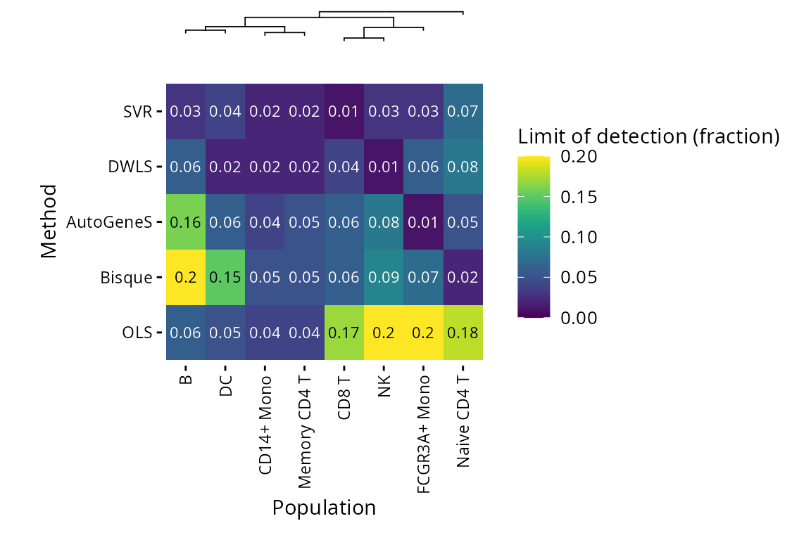
plt_spillover_heatmap(pbmc_bench)$heatmapComputational performance
We can also plot computational performance metrics easily for
scbench in the same way we did for scref:
plt_comp_performance(pbmc_bench)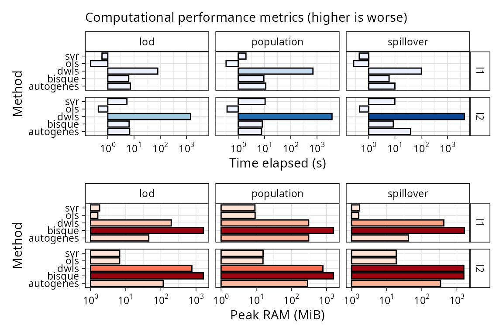
DWLS is the slowest method of this comparison even if we have
pre-computed the reference. Bisque is more memory hungry, but it
computes the reference in the deconvolute step.